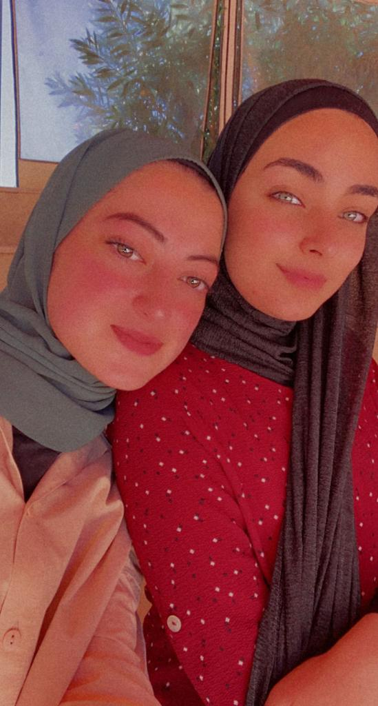
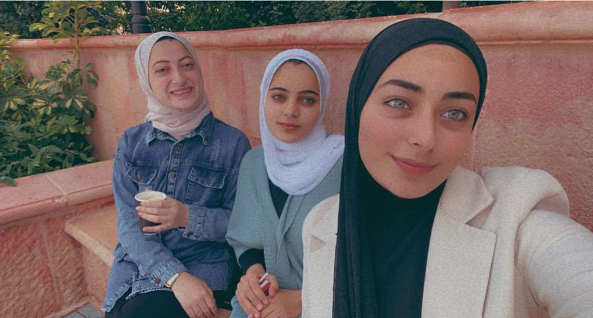
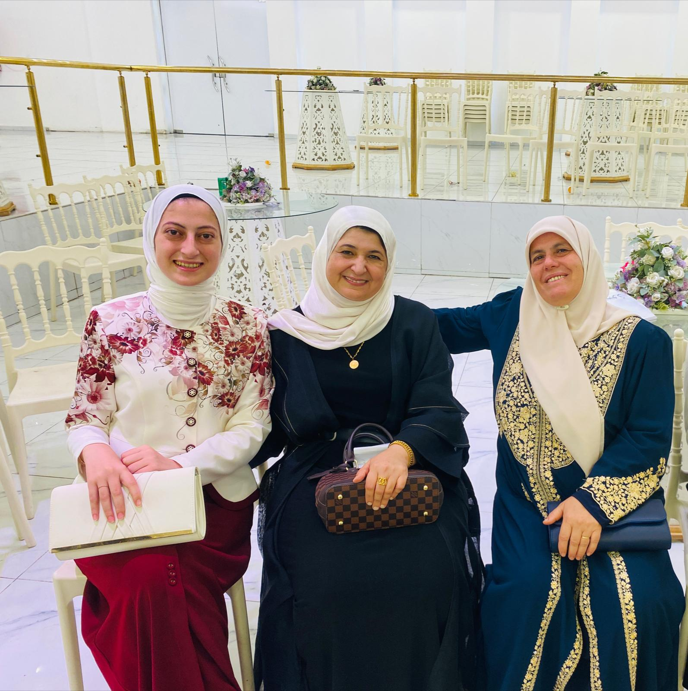

العمر كُله سوس

احلى الذكريات معك عيني

enjoy im your day 3inee
بحب هالصوره جداا

احلى عشرينيه

أرغب في أن أهدي إليكِ شجرة من أجل أن تظلِّل عليكِ، وتحميك من أي خطر، وتعطيكِ كل الثمار، وكل سنة وأنتِ صديقتي وبخير دائماً. كل سنة وأنتِ مصدر النور لقلبي، كل سنة وأنتِ مصدر الفرح لروحي، كل سنة وأنا أجمع كل كلمات الحب من أجل أن أصنع لكِ منها أجمل قلادة وأهديها إليكِ وكل عام وأنتِ أفضل ومحققة كل أمانيكِ. كل سنة وأنتِ أهم ما في هذه الحياة، كل سنة وأنتِ طيبة يا أرق إنسانة في الوجود، صديقتي الغالية يا أحلى الناس عيد ميلاد سعيد. اليوم عيد ميلاد أغلى صديقة في حياتي، عيد ميلاد أرق وأجمل إنسانة في حياتي كل سنة وأنتِ طيبة وتحققي كل آمالك بإذن الله. اليوم أطفأنا كل شموع الماضي، وسوف نشعل شموع الغد التي تجعل سنتك الجديدة سعيدة وسنة الفرحة لكِ، كل عام وأنتِ بألف خير يا صديقتي. كل سنة وأنتِ طيبة يا أحن وأطيب صديقة، عيد ميلاد سعيد، أرجو من الله سبحانه وتعالى أن يمنَّ عليك في هذه السنة الجديدة بالفرح والسعادة والراحة، عيد ميلادك أغلى عيد في حياتي يا صديقتي. تكتمل الأعياد بعيد ميلادك يا صديقتي، كل سنة وأنتِ قريبة مني وسنة خير وفرحة وسعادة عليكِ يا أطيب قلب في الدنيا. بحثت كثيراً لكي أهنئك بعيد ميلادك ولكن لم أجد كلمات تليق بوجودك في حياتي، ولكن سأقول لكِ كل سنة وأنتِ طيبة يا أعز وأحب صديقة لي في الدنيا يا عبير الزهور يا ياسمينة الحياة يا وردة الدنيا. اليوم سوف تُضاء شموع قلبي احتفالاً بعيد ميلاد أعز صديقة لي، عيد ميلاد سعيد، يُعَدّ اليوم عيد ميلادي أنا لأنّكِ أنتِ السند لي يا أغلى إنسانة في حياتي. للفرحة عنوان وهو عيد ميلادك يا صديقتي، في مثل هذا اليوم الجميل كانت قد وُلِدت أفضل صديقة لي وأقول لها عيد ميلاد سعيد وجميل وأدع الله أن يمد عمرك أعواماً مديدةً في طاعته. كل سنة وأنتِ طيبة يا أجمل صديقة لي. ربنا يديم ضحكتك الجميلة يا وردة متفتحة يا غصن شجرة متين يا أحلى من الحلوين يا أفضل صديقة لي يا رمز النقاء والحنية. إقرأ المزيد على موضوع.كوم: https://mawdoo3.com/%D8%B9%D8%A8%D8%A7%D8%B1%D8%A7%D8%AA_%D8%B9%D9%8A%D8%AF_%D9%85%D9%8A%D9%84%D8%A7%D8%AF_%D8%B5%D8%AF%D9%8A%D9%82%D8%AA%D9%8A